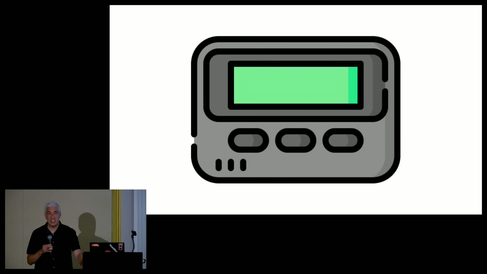
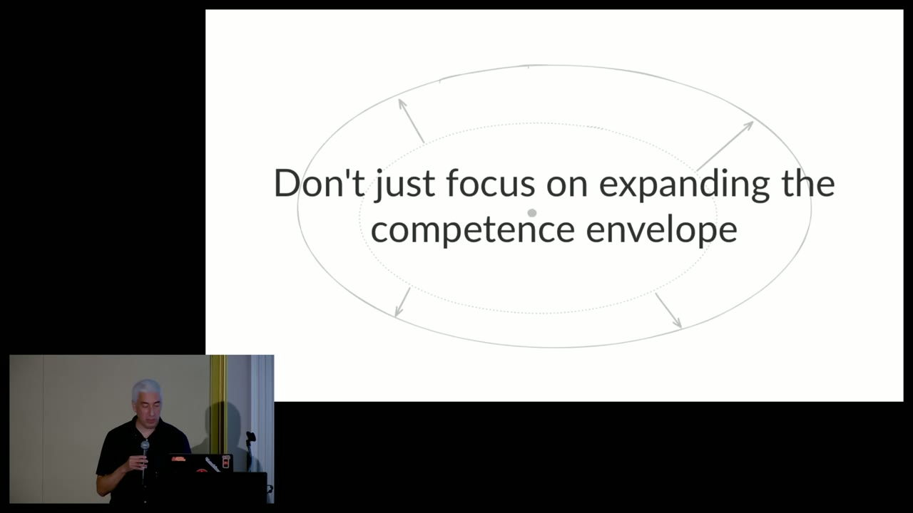

Newsletter lead · 430 words
Your system may fail because its recovery machinery works exactly as designed.
In his SSW 2026 talk, Lorin Hochstein calls attention to saturation: the point where demand for a finite resource outruns its ability to serve work. The resource may be CPU or memory, but it may also be a connection pool, a confirmation service, an API quota—or the attention and authority of responders.
The uncomfortable examples are not simple overload. In Slackʼs 2021 outage, traffic and network pressure blocked web threads. Autoscaling tried to help, but provisioning introduced pressure into other finite paths. In the Bluesky incident described in the talk, a large valid batch coupled goroutines, network ports, logging, threads, garbage collection and memory. A local solution became part of a system-level loop.
The usual response is to expand capacity and add guardrails. We should. But every new bound is still finite, and every automated response consumes something. Hochstein borrows the resilience-engineering idea of a competence envelope: the region where the system performs capably under expected pressure. We can enlarge it; we cannot make it infinite.
Beyond that boundary, survival depends on graceful extensibility—the ability to change how the system operates. That means more than spare servers. It means tested controls, authority to use them, feedback that shows whether they worked, and operational expertise: traffic shedding, quick rollback, tenant isolation, expiring break-glass access, a feature that can really be disabled at 03:00.
A useful review question follows: for every mechanism that responds automatically to failure—retry, scale, log, rebuild—what scarce resource does it consume, and what stops it? A second question is harder: if the bottleneck is not the one we predicted, which options remain?
Five short posts
1 / Mechanism. Saturation isnʼt "the graph reached 100%." Itʼs work waiting or being refused because a finite resource canʼt serve it fast enough. Inspect queue age, drain rate and refusal—not just averages.
2 / Feedback. Retries, autoscaling and verbose logs are not free responses to failure. They are new demand. During an incident, ask what each corrective loop consumes and what condition stops it.
3 / Design. A bounded queue can be a feature: it chooses an early, legible refusal before memory or latency chooses a larger failure. The question is which work gets refused and how it is reconciled.
4 / Operations. A feature flag is optionality, not resilience. It becomes adaptive capacity only when someone can recognize the need, has authority, knows the side effects and can observe the result.
5 / Learning. A postmortem that records only the broken component and action items discards the most reusable evidence: what responders noticed, believed, rejected, needed and improvised.
Quote cards


Editorial checklist
- Watch at least 45 seconds around any clipped quotation.
- Do not turn a paraphrase printed on a slide into a speaker quotation.
- Keep "optimal incidents" paired with containment and learning; never celebrate impact.
- Describe the Waymo confirmation queue as the speakerʼs inference unless internal evidence is added.
- Do not write "scaling caused the Slack outage"; describe the coupled contribution.
- Link the full local talk or original host when published.
- Add image credit and conference permission according to the eventual publisherʼs policy.
- Recheck timestamps if the source video is transcoded or trimmed.